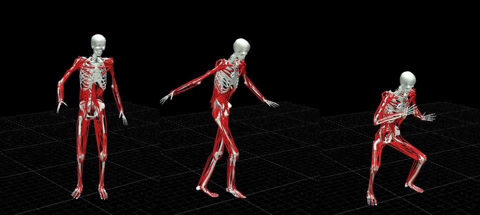

MUSIC → MOVEMENT
从音乐出发，
让运动有迹可循。
FitGen 项目主页 · 音乐驱动的健身动作生成
编排 Agent 按音乐八拍选定徒手动作，交给下游变速、拼接并渲染为健身视频。
SuperMimic动作跟踪

00:00.4800:03.4800:04.48
项目工作台 / 架构蓝图
05 生成模块01 数据基础01 能耗计算
汇报
06 份第 01 次汇报
能量消耗计算
查看汇报
OpenSim 模型与代谢能耗
完整链路 · 骨骼与肌肉模型 · 求解过程 · 实现问题
第 02 次汇报
数据构建与动作质量控制
查看汇报
Pamela 与 KyraPro 原子动作切分
三类视频问题 · ViTPose 多人识别 · shot change · 预告画面处理
第 03 次汇报
能量计算与动作训练
查看汇报
MyoFullBody能量计算+Supermimic训练
MyoFullBody 能量计算 · Supermimic 训练
第 03 次汇报
数据构建与动作质量控制
查看汇报
原子动作切分与输入质量控制
问题回顾 · 多人检测 · ShotChange · 四周虚化 · 复合周期切分
第 04 次汇报
动作跟踪与能耗评估
播放汇报
SuperMimic 六组实验
跨库泛化、网络加宽、深蹲肌束激活与手环能耗对照
第 04 次汇报
原子动作切分与结果验收
查看汇报
Pamela 结果与 KyraPro 切分升级
Pamela 结果质检 · KyraPro 旧版方法与问题 · 新版完整周期方案
架构总览
模块详情
7 个模块展开团操编排 Agent 可查看选动作的依据、动作库关系和逐八拍 IR 示例。